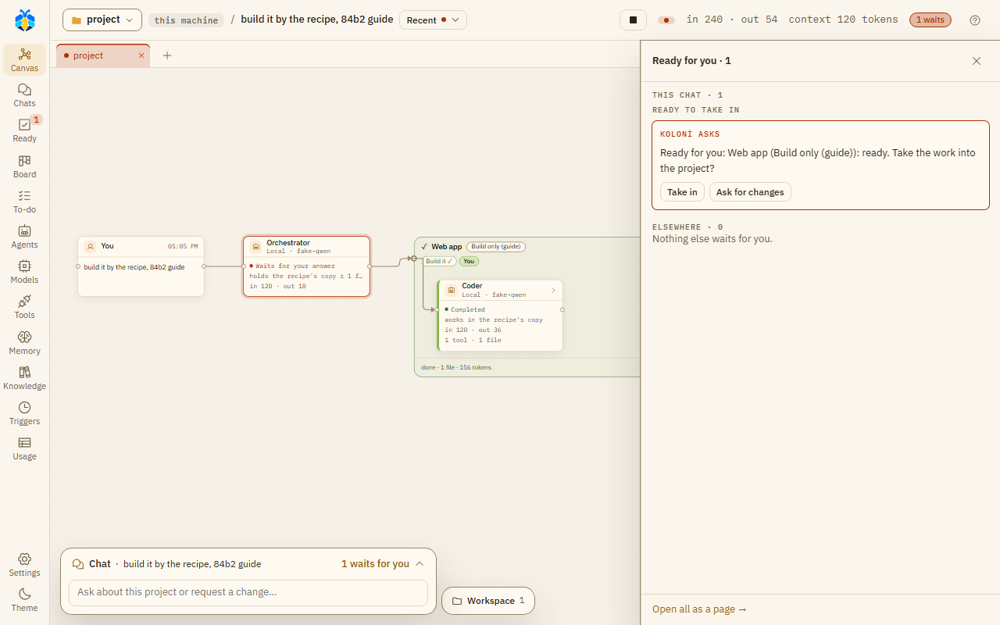

Working copies and Take in¶
The Workspace¶
The Workspace button opens "the project's files, what agents changed, wrote or showed, and what waits for you".
- Files: the project's files. Open files show as tabs.
- Changes: what changed, sorted by what you have to do: Waits for you, At work, Kept, In the project, Not by an agent, Needs a look, and Closed (shut at first). Inside a group, each change sits under its agent and your message. Each file says in words what happened ("changed", "new", "deleted", "you said no"). With git, the tab shows this chat's work and what git sees changed since the last commit. Without git (or when git does not answer in time), it shows this chat's record and says so. The tab's count is git's (as in the top bar), or without git what is not closed. Show folders as a tree puts the files in their folders. When changes wait for you, it says how many and offers Next waiting ▸. A file that waits opens on its diff with Approve and Reject; one in the project offers Revert. An agent's copy opens on what it holds, with Take in… (or Look) to its card.
- Previews: dev servers agents started.
- Working copies: each sub-agent's copy ("name's copy").
Working copies¶
Each sub-agent changes files in its own copy of the project, outside your folder. Your folder does not change until its work is taken in.
.gitand caches are not copied.node_modules,.venvandvenvare linked, not copied.- A project over 20,000 files or 500 MB gets no copy: the agent works in the project itself.
- When you and an agent changed the same file, KOLONİ merges line by line (for files up to 1 MiB).
- On Linux and macOS a copy keeps whether each file is runnable, so a script such as
./gradlewstill runs, and Take in carries that back to your project. A new file written with Write files gets your usual mode (0644with the common umask).

A working copy's life, from the copy to your project; the "On a branch" lane is Branches below. (full size)
Taking work in¶
When a sub-agent finishes, its changes come back on a card: Take in …'s work?, with Take in and Discard. At Auto-edit files and Full auto they come in without a card when the agent finished, nothing clashes and the project's test passed. See Permission levels.
- Changed on both sides: files you and the agent both changed. "Nothing is chosen for you"; pick a side for each, or press Let an agent resolve the conflicts.
- Run the test runs the project's test on the copy (Settings › This project › Checks and git › Test before adding).
A team's recipe keeps its work in one copy until you press Take in on the Teams' work is ready card. See Ready and approval cards.
Take in: the team's work comes into the project only now.

A team's work waits under Ready to take in until you press Take in.
Branches¶
The Orchestrator can give a team's work a git branch of its own. Then the card offers Merge or Open pull request, as you chose under Settings › This project › Checks and git › How a team's finished branch reaches yours. Until you choose, the first finished branch on a GitHub project asks. A pull request lets KOLONİ push the branch; it never merges one. Keep this branch after merging keeps the branch.
Opening a pull request needs gh (GitHub's CLI) installed and signed in (gh auth login), and the
project's origin must be the GitHub repository gh sees. Until then the card says why it cannot open one.
The Inspector and Where the work is label such an agent "works on branch koloni/name" (an agent in a plain copy: "works in its own copy").
A secret you gave in this turn (see Security model) never leaves on a branch:
- If a file on a finished branch holds it, the card does not merge it or open a pull request, at any level, even on your click. Take the secret off the branch, or press Discard, which deletes the branch.
- If the agent stopped first, or nobody watched the turn, a branch that holds it is deleted whole and the Orchestrator is told (on a Stop, the chat says so too). For a branch opened again from an earlier turn, the work of those turns goes with it.
- Keep this branch after merging is refused when any of its commits holds it.
When an agent stops¶
An agent on a branch that stops before it finishes leaves its work committed on the branch. That holds also when you press Stop or Stop everything while it works; the chat says so.
Told to go on (by the Orchestrator, in this turn or a later one you watch), it goes on on the same branch: its earlier commits are there, and new work goes on top. Its merge is still held to where the branch was first made from: if the project is on another branch now, or that commit is gone from it, the merge waits for you, at Full auto too.
Sometimes it cannot go on on its branch. Then it works in a fresh copy of the project instead:
- The branch was merged or sent as a pull request already: it and the Orchestrator are told why.
- Git refuses the branch (it was deleted, another branch has its name now, or it is checked out somewhere else): they are told why too.
- You pressed Discard, which deleted the branch: no message.
- The branch was made by an older KOLONİ that did not record where it started: no message.
An agent in a plain working copy that stops unfinished keeps what it changed: by itself (it failed, or hit its step limit), and on Stop or Stop everything too, also when its Take in card was already waiting for you. A card under Ready to take in offers Take in or Discard; nothing of it reaches your folder before that, at Full auto too. An agent told to go on gets that copy back. A copy with no changes is removed. A team's recipe and a job while you're away keep their copy on a Stop as well.
The git button in the top bar ("⑂ main · 4 changed") opens Where the work is. It reads git and changes nothing but the branch you switch to. It has three parts, each saying in words how a piece of work stands:
- Your branch: what is not saved in git yet (See changes), the last commit, and + New branch. While a turn works or files are not committed, it says why you can't switch.
- Agents' copies · this chat: "working" (See changes), "finished, waits for you" (Take in…), or "kept" (Look).
- Other branches: "not joined" or "joined ✓", how many commits ahead and behind, with Look and Switch to. What an agent said it made, but git does not show, is listed last.
While a branch is open in the Workspace (Look), it shows read only, against your branch, with Back to the project.
Starting from a GitHub issue¶
On the Chats page, From a GitHub issue… (beside New chat) starts a chat in the open
chat's folder from an issue. Paste the issue's address, or its #number in the project's repository, or
pick one of the repository's open issues from the list. KOLONİ opens a new chat, attaches the issue's
title, text and comments as a file (github-issue-12.md), and writes a short first message. Nothing
runs until you press Send. Long issues are cut at about 20,000 characters.
Anyone can write an issue, so KOLONİ marks its text as data for the agents, never as your instructions. See Outside content for what that does and does not stop.
KOLONİ reads GitHub with your own gh (GitHub's CLI) and never stores or sees a token. Install gh
from https://cli.github.com and sign in once with gh auth login. Until you do, the dialog says why
no issues are listed. The project folder must be a git repository. Listing issues, or picking one by
#number, also needs its git remote to be on GitHub; an issue's address works without that.
Committing¶
With Save each sub-agent's work as a git commit on (Settings › This project › Checks and git), the card offers a commit once the changes are in: one commit per piece of work, only where the folder is the top of a git repository. It is always your click, and nothing is pushed.